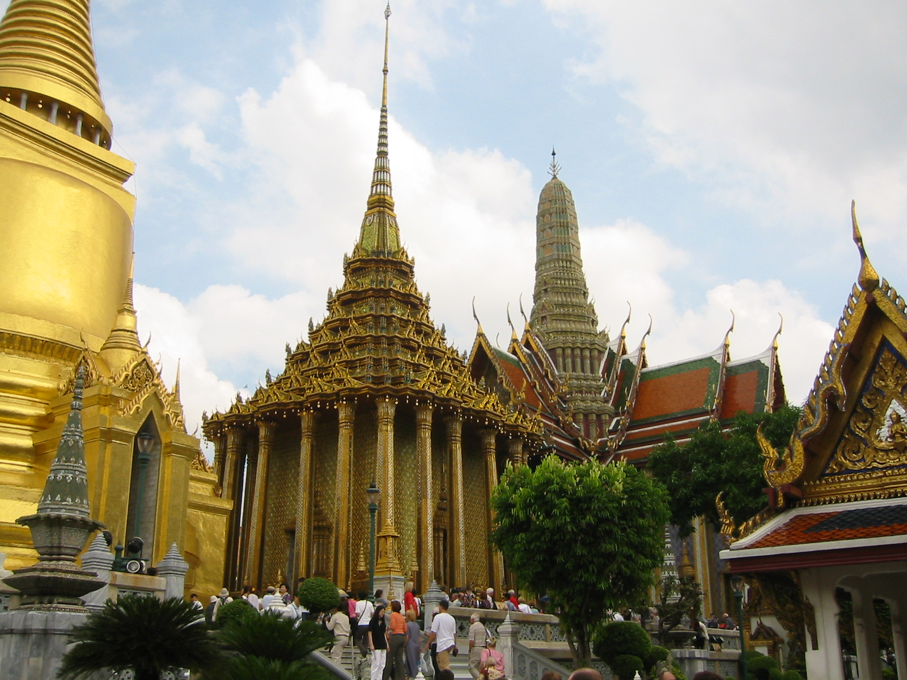
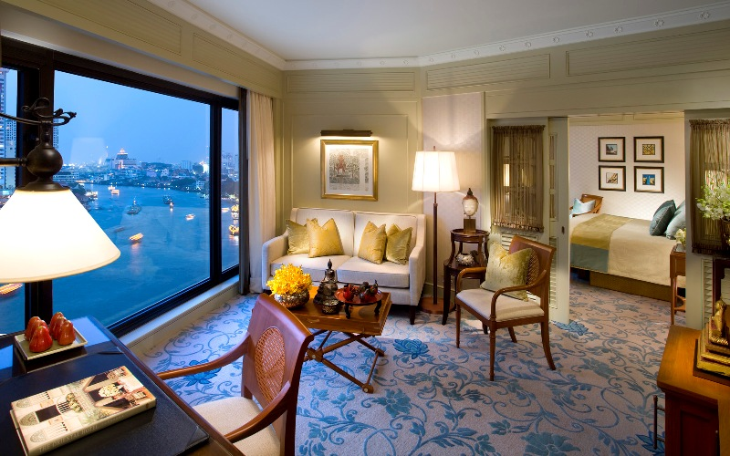

Bangkok welcomes more visitors than any other city in the world and it doesn’t take long to realise why. This is a city of extremes with action on every corner: Marvel at the gleaming temples, catch a tuk tuk along the bustling Chinatown or take a longtail boat through floating markets. Food is another Bangkok highlight, from local dishes served at humble street stalls to haute cuisine at romantic rooftop restaurants.
Luxury malls compete with a sea of boutiques and markets, where you can treat yourself without overspending. Extravagant five-star hotels and surprisingly cheap but good hotels welcome you with the same famed Thai hospitality. And no visit to Bangkok would be complete without a glimpse of its famous nightlife – from cabarets to exotic red-light districts, Bangkok never ceases to amaze.